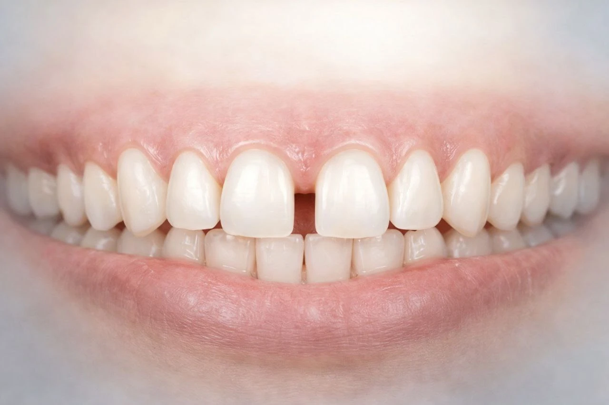

Can Teeth Gaps Be Closed Without Braces? A Complete Guide
By Dr. Sudip Roy, Senior Consultant Cosmetic Dental Surgeon
Are you unhappy with the gaps between your teeth? Teeth gaps—medically known as diastema—are very common. While metal braces are a well-known solution, many gaps can be corrected using modern cosmetic methods.
❓ Why Do Teeth Gaps Happen?
- Teeth smaller than the jaw size
- Missing or undersized teeth
- Large labial frenum (tissue between lip and gums)
- Childhood habits like thumb sucking
- Gum disease causing bone loss
✅ How to Close Gaps Without Braces
1. Dental Bonding
A tooth-coloured resin is applied and shaped to close small gaps in a single visit. It is quick, painless, and cost-effective.
2. Porcelain Veneers
Thin shells bonded to the front of teeth provide a long-lasting, natural appearance. Best for cosmetic correction and tooth-shape issues.
3. Clear Aligners
Nearly invisible and removable trays gently move teeth into proper alignment without metal wires.
⏳ Comparison Table
| Treatment | Time | Durability |
|---|---|---|
| Dental Bonding | 1 Day | Temporary |
| Veneers | 1–2 Weeks | Long-term |
| Clear Aligners | 5–9 Months | Long-term |
⚠️ Dangerous Methods to Avoid
Never use rubber bands, DIY kits, or internet hacks. These can lead to tooth loss, gum damage, and permanent bite problems.